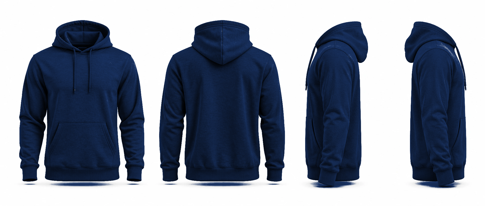

6
Edición azul marino
La misma sudadera en el azul institucional, con blanco y dorado

WESTHILL
Vestigia Nulla Retrorsum
E Q U I P O
FRENTE
ESPALDA
PERFIL IZQUIERDO
PERFIL DERECHO
Frente:
logo blanco al pecho izquierdo.
Espalda:
huella dorada, WESTHILL y el lema.
Manga:
banderín UW.
Tintas:
2 (blanco y dorado). Requiere sudadera azul marino.